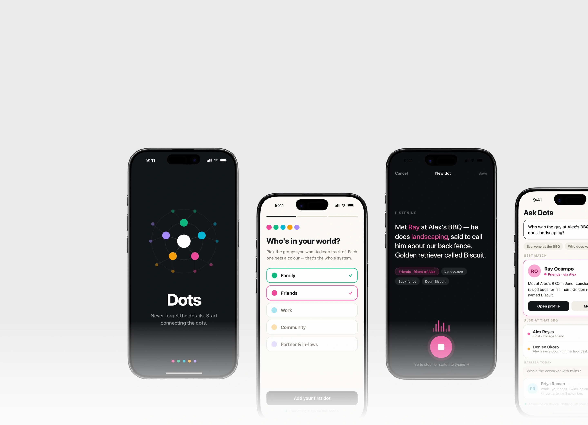
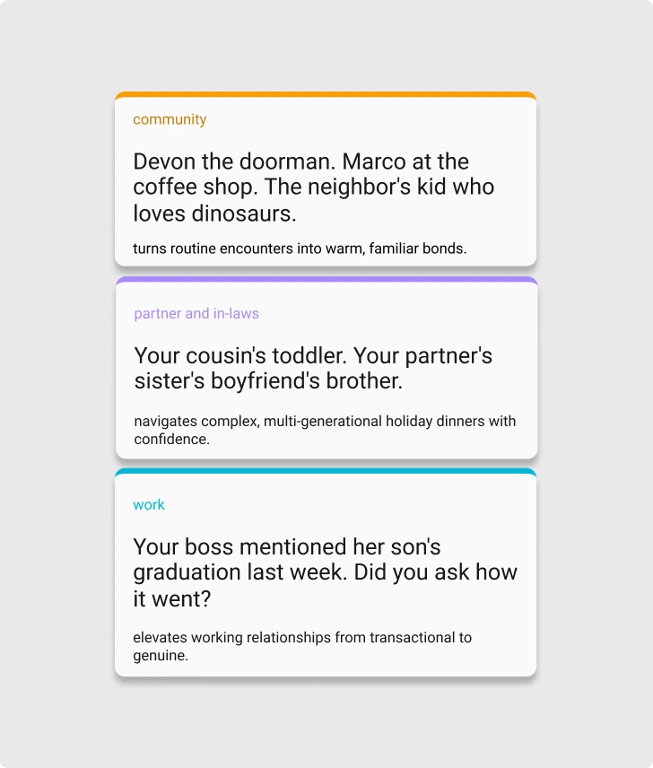
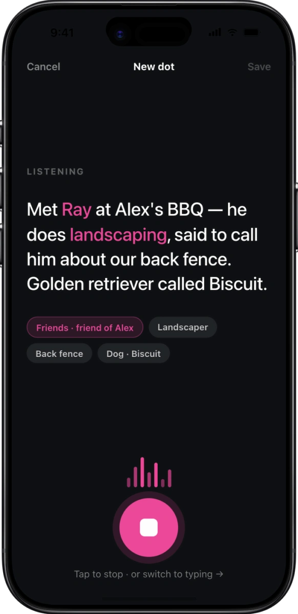
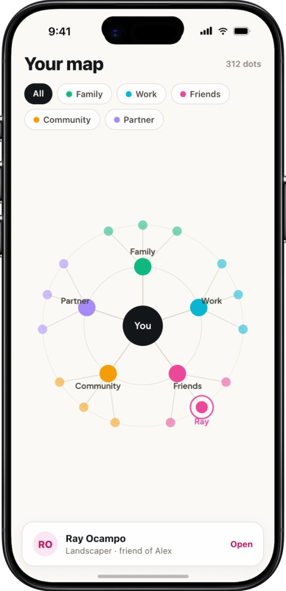
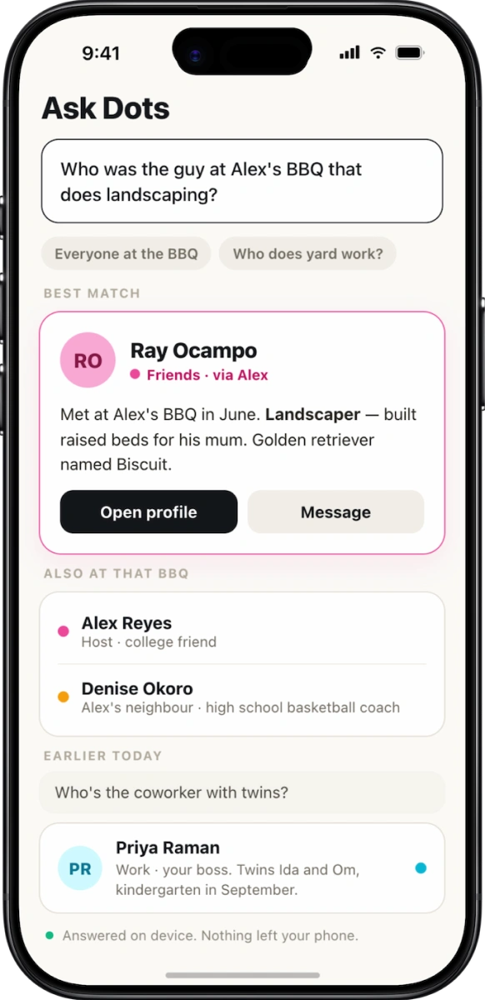
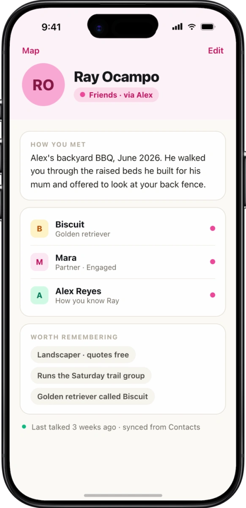
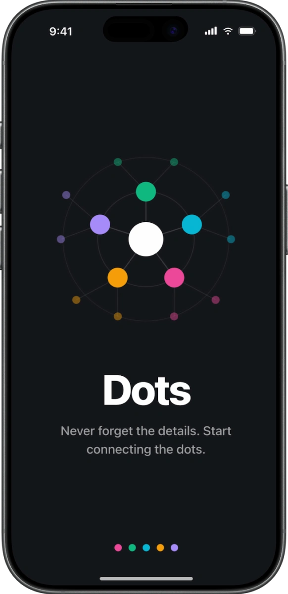
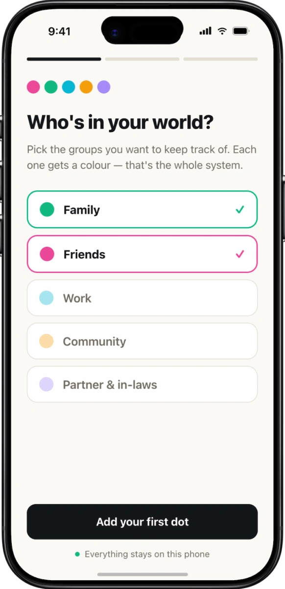
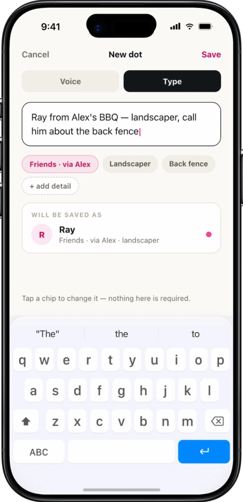

Dots Social Memory Aid
Concept Case Study · Mobile App DesignDots is a social memory aid for anyone from a nine-year-old learning their cousin's world to a grandparent keeping up with a family that keeps growing. Capture a person in seconds after you meet them. Get them back the moment you need them.
Scope: Product Strategy, UX Architecture, UI/Visual Design, Brand Identity, Cognitive Interaction Design
Deliverables: Concept Definition, Ecosystem Architecture, Dynamic Color System, Wireframes, High-Fidelity Interactive Mockups

"We meet dozens of important people every week. Our brains aren't built to hold every name, story, and detail: forgetting doesn't mean you don't care, it means you're human."
Dots bridges the gap between caring about someone and actually remembering their story.
Problem
Forgetting isn't a character flaw: it's a memory-architecture problem. The same friction repeats across every part of life: a small, human detail slips before it's needed again.
Capture is too slow
By the time you'd open a contact card and pick fields, the moment, and the detail, is gone.
Recall is the wrong shape
Contacts are indexed by name. Humans index by story: the BBQ, the trade, the favor offered.
The cost is social
Forgetting isn't neutral. It reads as "you don't matter": to a coworker, a niece, a neighbor.

Insight
Color categorizes faster than reading does.
Dual-coding theory says a visual channel and a verbal channel together beat either alone. So every dot in Dots carries both: a color token your visual cortex sorts in milliseconds, and a plain-language line you read only if you need it.
The practical payoff: you pre-filter a network of 300 people before you've read a single name.
Family
Parents, siblings, cousins and everyone attached to them, kids and pets included.
Work
Coworkers, leadership, the front desk, and the conference contact you'll email next week.
Friends
School, childhood, and the ever-expanding ring of friends-of-friends.
Community
Neighbours, the barista, the dog park, the run club. The people you see weekly.
Partner
Your partner's side: in-laws, their siblings, and the names you're expected to know.
How Dots Works
01 · Capture
Say it, or type it
Ten seconds of speech in the driveway, or the same parser from the keyboard, for a quiet room.

02 · Map
See the whole web
A radial orbit: you at the centre, one hub per colour, every dot hung off whoever introduced them.

03 · Ask
Search by the story
"The guy at Alex's BBQ who does landscaping" is a valid query.

04 · Arrive
Walk in prepared
Before an event, Dots surfaces who'll be there and what you last talked about.

Inclusive Interface
Toggle these: the card on the right responds.
Colour is never the only signal. Each category also owns a shape: circle, square, diamond, triangle, hexagon, so the dot system survives deuteranopia and a dim screen alike.
44px minimum targets everywhere · every colour pair clears 4.5:1 on the warm neutral · full VoiceOver labels that read "Ray Ocampo, Friends" not "pink dot" · no timed interactions, ever.
Ray Ocampo
Friends · landscaper, met at Alex's BBQ
Tommy Mulligan
Family · your cousin Sarah's second kid
Priya Raman
Work · your boss, twins named Ida and Om
Marcus at the desk
Community · doorman since 2011
Dana Whitlock
Partner · Mara's Aunt, lives in CT
Wireframes
Every screen from the sprint, in sequence.

Launch: the whole idea in one frame.

Onboarding: one dot, then you're in.
Capture by voice: say it, done.

Capture by typing: the quiet option.
Map: your whole world, pre-filtered.
Ask Dots: search the way you remember.
Profile: the details, not the data.
Next Steps
What this 48-hour sprint didn't have time to prove, and what would need to be true before it ships.